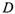
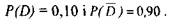
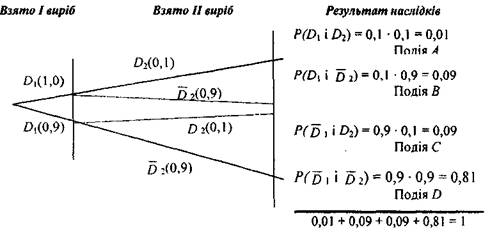
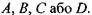
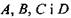

1.5
Імовірнісні дерева
Коли необхідно знаходити ймовірність
кількох сумісних подій, доцільно будувати схему
імовірнісного дерева.
Імовірнісне дерево
або діаграма ймовірностей показує всі можливі
ймовірності, які асоціюються з множиною елементарних подій даного
експерименту.
Побудувавши таку
конструкцію, можна вибирати всі можливі наслідки
випробування, які нас цікавлять, і знаходити відповідні їм ймовірності.
Проілюструємо це
на прикладі.
Більшість фірм-виробників мають відділ
контролю якості, який має забезпечити
відповідність виробленої продукції стандартам якості. Основна мета діяльності відділу контролю - мінімізувати
кількість дефектних виробів підприємства, тобто кількість дефектних виробів не може перевищувати встановлену межу.
На Рис. З представлена діаграма
імовірнісного дерева, побудованого для деякої фірми, рівень дефектності якої дорівнює 10%. Отже, 10% виробленої
продукції не відповідає стандарту якості для даної продукції.
Нехай подія

полягає в появі дефектного виробу і тому

Два вироби вибрані
навмання. Після перевірки відділом контролю якості, побудовано імовірнісне
дерево.

Рисунок З
Рухаючись
за певною послідовністю гілок дерева, можна визначити одну із чотирьох
можливих подій:

Наприклад,
подія В полягає в тому, що І виріб - дефектний, а II - ні. Відповідна ймовірність події В дорівнює
0,09.
Зауважимо, що сумісна ймовірність всіх чотирьох подій, дорівнює 1, тому що події  утворюють повну групу подій.